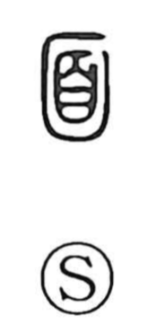

Explanation
面 pictures a mask with openings through which only the eyes appear. The outer contour presents a face, while the eyes identify the living wearer behind it. The mask gives a visible expression that can cover the person's own.
The word extends from this represented face to the human face generally. A face turns toward something, giving facing, meeting someone in person, and a particular direction or aspect. Turning away supplies another branch of the same bodily relation.
The visible face of a thing is then its front, outer surface, or upper side. 面 can consequently describe the surface encountered by the eye or hand as well as a person's appearance. The movement from mask to face makes these different surfaces part of one vocabulary.